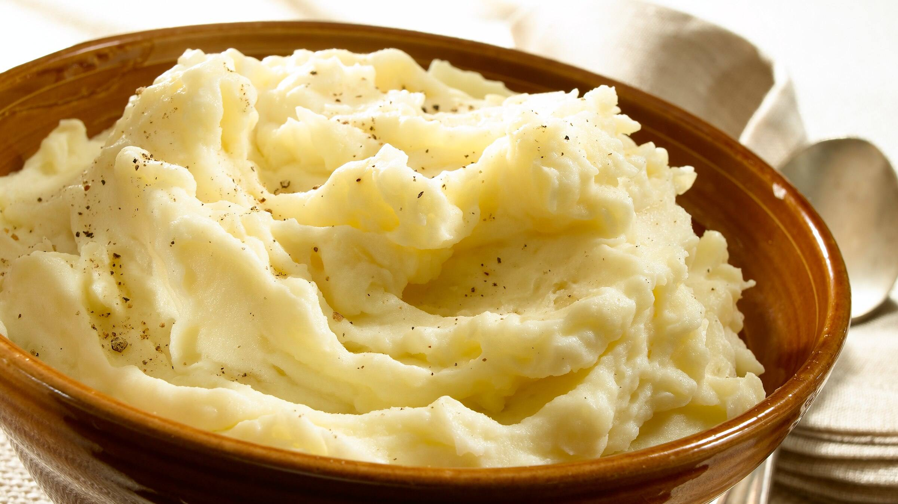

Smashed potatoes

Smashed potatoes:
This recipe will teach you how to prepare delicious and fluffy smashed potatoes
This is a quick and delicious recipe for you to use as a side for meat, chicken and the like.
Ingredients
- 2 potatoes
- half cup of milk
- 2 spoons butter
- salt & pepper to taste
- nutmeg
Steps
- Peel the potatoes and chop them into small squares, all of the same size
- Bring water to a boil and add the potatoes for about 10 minutes or until soft
- Pour them in a bowl with the salt, pepper and milk and smash them
- Add butter and keep smashing
- Finally grate some nutmeg and serve